青蟹多模态智能体项目说明
CRABGRAPH / PROJECT HANDBOOK / 2026.10.10
面向 Python 与 AI 应用开发的完整业务工作台
CrabGraph 将青蟹资料检索、图文观察、用户记录分析与自主研究任务放进同一个本地工作空间。项目以真实知识库和模型调用为基础，给出可追溯的答案与研究报告，支持持久化记忆、MCP、计划确认和运行观察。
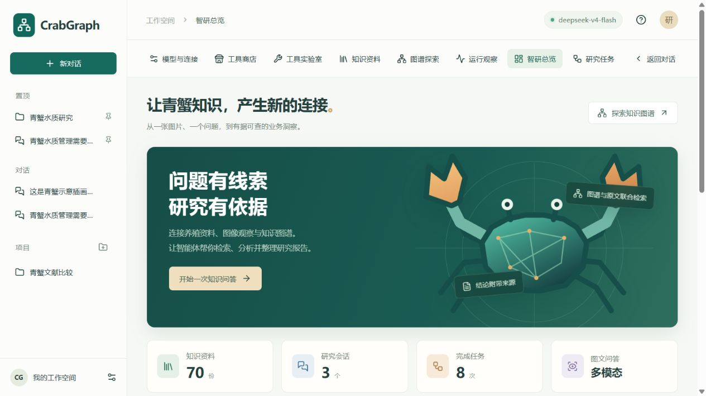
| 交付范围 | 当前实现 |
|---|---|
| 主要技术 | FastAPI / LangChain / LangGraph / Vue 3 / DeepSeek / LightRAG / PostgreSQL pgvector |
| 参考覆盖 | 13 / 16 项等价技术能力，81.25%；按已选择的 Python 方向核算 |
| 本机位置 | E:\Projects\deepseek-lightrag-agent |
| 使用入口 | http://127.0.0.1:8503 |
项目定位与业务价值
该项目服务于青蟹养殖资料查询和研究整理：把文献中的结论、现场图片的可见线索与用户提供的记录分开处理，再通过同一工作台提供检索依据。它适合展示 AI 应用开发中的业务建模、模型接入、RAG、智能体编排和产品交付能力。
两条完整业务链
知识问答链面向具体业务问题，可上传图片和养殖 CSV。图片先生成观察文字，问题与观察用于本轮知识检索；随后模型按需调用追加检索和统计工具，流式生成答案，并给出原文片段和来源。
研究任务链面向更长的目标。模型先规划最多3个检索问题，用户可以确认计划再执行。LangGraph 保存审批中断点，检索后合并证据、生成报告、检查引用编号，最后导出 PDF 或 Markdown。
可以讲清楚的技术亮点
一是原实例与副本隔离：复制现有知识库，保留嵌入配置，并通过哈希核对证明原始存储未改变。二是有状态执行：会话、研究计划、任务状态和事件分别持久化，浏览器断开后仍能读取结果。三是证据可见：来源与原文面板让用户核查模型结论，而不是仅看到一个答案。
四是完整工具链：不仅定义工具，还通过真实模型调用、MCP 协议调用、固定终端命令与资源文件验证业务流程。五是独立 PGvector 路径：在保留 LightRAG 的同时，通过已有向量快照验证 PostgreSQL 的相似检索能力。
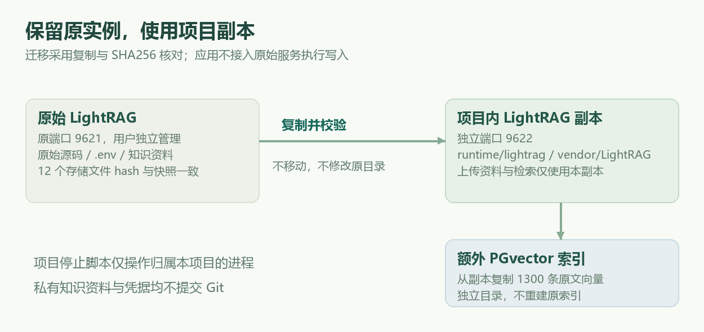
功能一览与交互设计
工作台使用海洋绿色与浅色背景，青蟹图形由知识节点组成。左侧仅保留新对话、置顶项目或对话、普通对话与项目；点击头像打开居中设置弹窗，左侧切换分类、右侧独立滚动，集中访问工具商店、模型配置、知识资料和其他能力。已去除装饰性英文标题、重复说明和小字。
| 页面 | 核心功能 | 演示重点 |
|---|---|---|
| 智研总览 | 资料状态、会话与任务足迹 | 真实数量，不显示虚构准确率 |
| 知识问答 | 图片与 CSV、多轮记忆、SSE | 观察和文献证据分开 |
| 研究任务 | 计划确认、检索、报告 | 展示 interrupt 与恢复 |
| 知识资料 | 分页、筛选、上传 | 只向知识副本写入 |
| 图谱探索 | 缩放、拖拽、实体详情 | 从关系继续发起问答 |
| 工具实验室 | 六类工具单独执行 | 检查真实接口和产物 |
| 运行观察 | 耗时、Token、工具记录 | 区分性能与准确性 |
| 连接设置 | 配置状态、MCP 接入 | 密钥留在服务端 |
| 工具商店 | 7个工具、分类、搜索、启停 | 默认启用联网等5项能力 |
前端采用 Vue 3 与 TypeScript，Markdown 输出经 DOMPurify 清理；图谱引擎按需加载。生产构建主脚本约220 kB，图谱模块约465 kB，均为压缩前构建产物大小。会话归属和置顶状态存入 SQLite，刷新后保留。
图文问答与证据核查
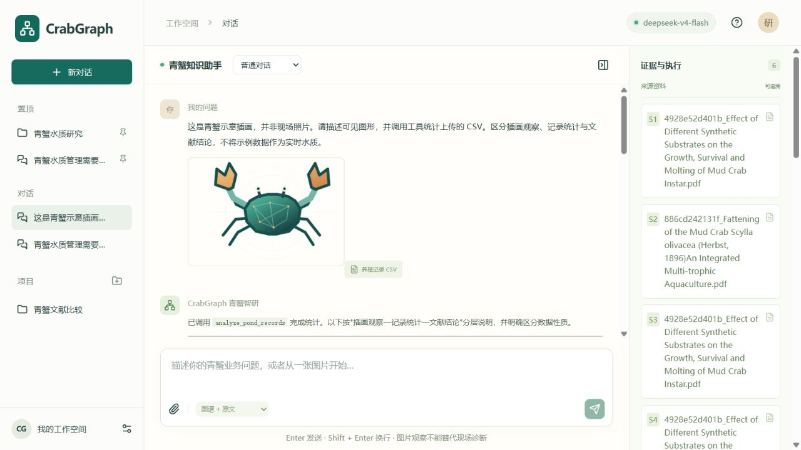
开启一个会话后，输入业务问题并选择检索模式。附件支持 PNG、JPEG、WebP 与 UTF-8 CSV，单个附件上限8 MB。点击回答中的 S 编号或右侧来源卡片，可以选择本轮资料；展开原文片段进行核查。
图文验收使用本项目绘制的青蟹插画与合成养殖记录。这组样例验证图片输入、视觉协议、PGvector、工具调用与统计输出，不代表现场青蟹图像识别准确率。真实模型调用返回6个来源，并调用了 analyze_pond_records。
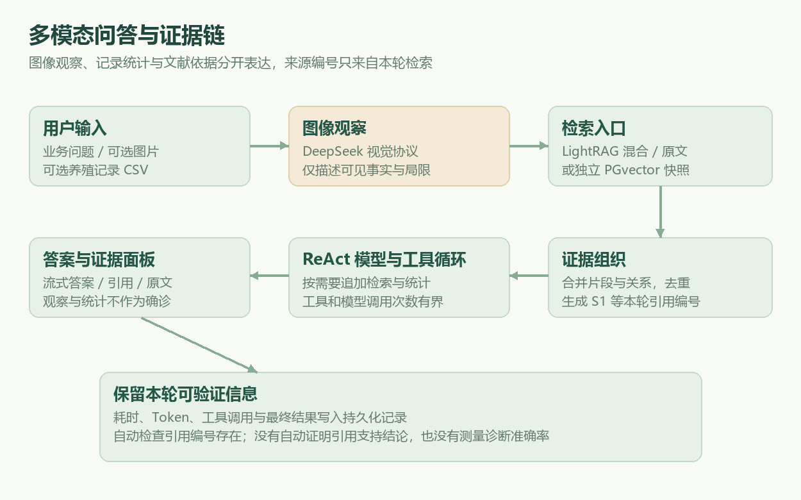
研究任务与计划审批
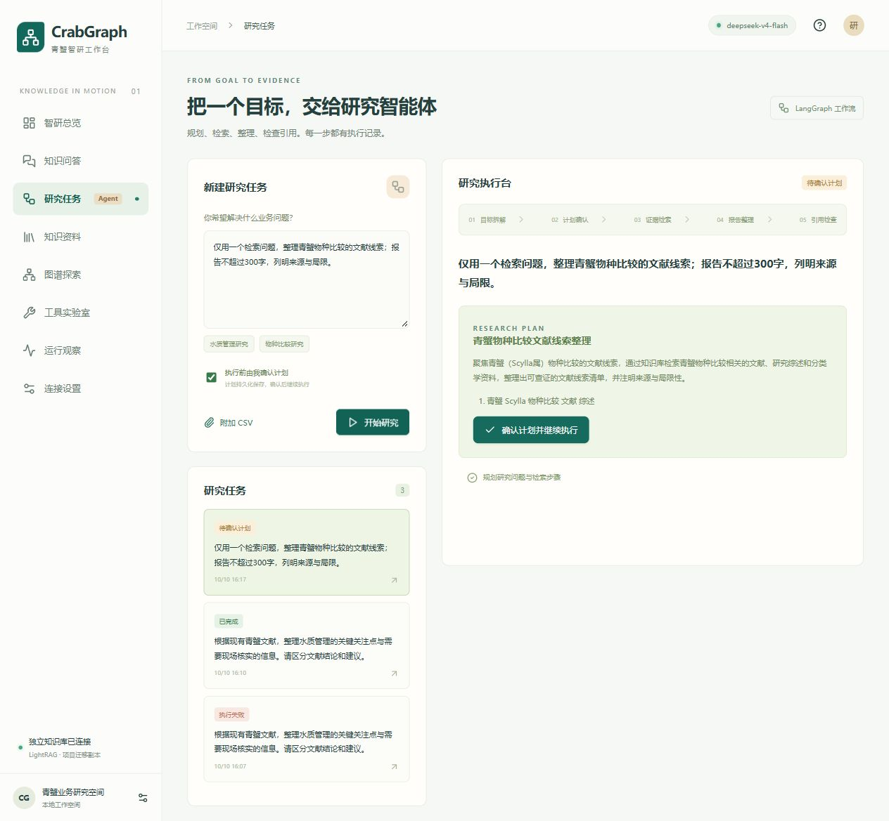
输入研究目标，选择是否在执行前确认计划。开启确认时，模型先输出标题、研究方法与最多3个检索问题，任务进入待确认状态。点击确认后通过 Command 恢复同一 LangGraph 线程，后续研究不重新规划。
任务列表可打开已有任务。执行过程中记录检索阶段和命中片段，完整结果存入数据库；取消在当前网络调用结束后生效。模型或知识库调用失败时显示失败状态，已保存记录仍可查看。
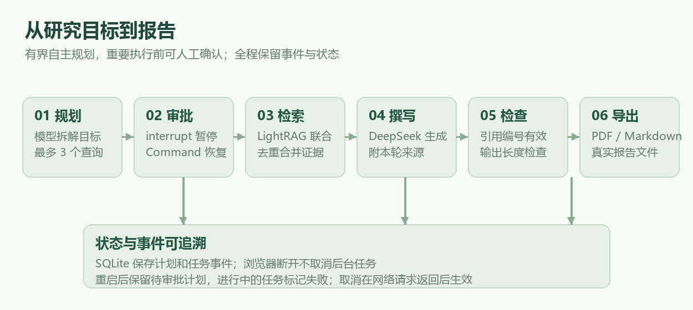
报告产出与引用边界
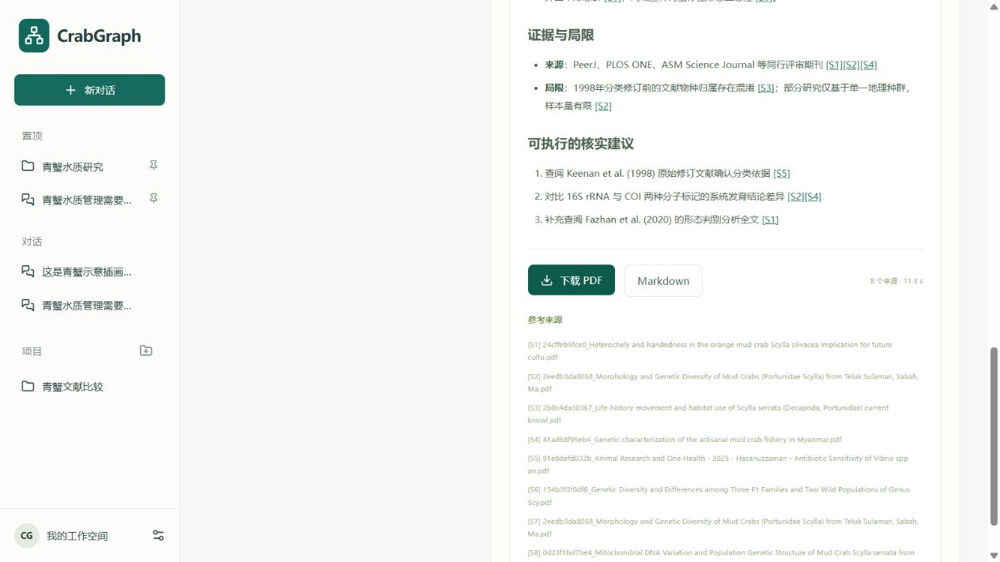
另一轮完整研究任务按3个问题检索，合并了15个可引用来源，生成了带摘要、发现、局限和核实建议的报告。研究执行阶段耗时41.05秒，不包含规划和人工确认等待。
最终输出执行引用编号检查，只允许本轮来源编号；若模型触及输出长度限制，任务标记失败，不把截断内容认定为完成。PDF 导出使用中文字体，并将 Markdown 表格转换为可分页表格。
来源计数是可引用条目数，可能包含同一文件的不同片段。来源编号存在不等于引用一定支持结论。当前系统没有自动测量语义忠实性、现场诊断准确率或农业生产适用性；这些需要业务专家与真实标注案例进一步评审。
知识资料管理
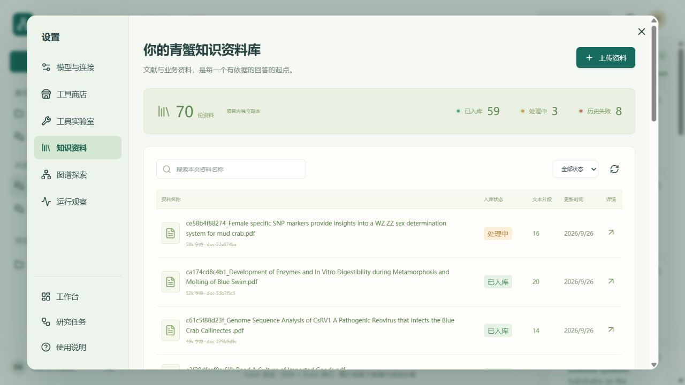
资料列表支持分页与状态筛选，可查看文件名称、更新时间、片段数与摘要。新上传支持 PDF、TXT、Markdown、DOCX，最大20 MB，并通过副本的上传接口提交处理。
当前副本保留70份资料及迁移时的历史状态：59份显示已处理、8份失败、3份处理或分析中。历史状态没有被伪造为全部成功，上传后的解析能力和耗时取决于副本的具体配置。
为什么保留原嵌入模型
现有向量使用 Jina jina-embeddings-v5-text-small，维度为1024。更换回答模型不要求重建这些向量，但更换嵌入模型后不能直接复用旧索引。项目默认保留原嵌入配置，仅使用独立副本运行。
PGvector 快照的使用
PGvector 复制的是副本已存在的1,300条原文向量。它保留真实文本和向量，查询时调用同一嵌入模型，再使用 PostgreSQL cosine 距离检索。该索引不自动同步新上传资料，新资料默认使用 LightRAG 混合检索。
知识图谱探索
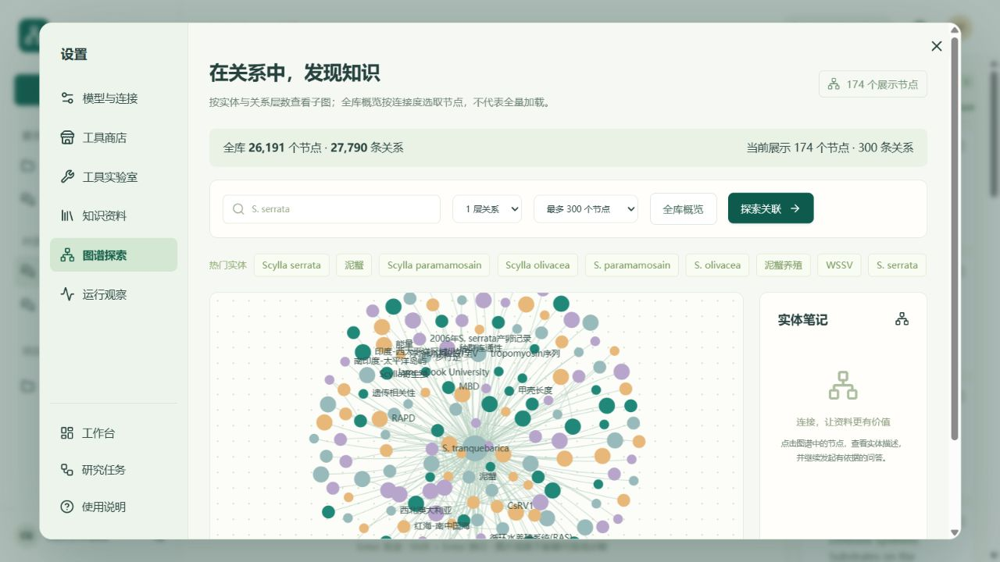
输入中心实体或选择热门名称，查询1到3层关系；展示上限可选65、150、300、500、1000，默认300。全库统计与当前子图统计分别展示，并保留 LightRAG 截断状态。实测 S. serrata 一层关系，在65上限时被截断；300上限时返回174节点、300关系。
原库与副本均有26,191节点和27,790关系，GraphML 的SHA256一致，数据没有减少。全库概览使用中心实体 *，按连接度选取有限节点，不代表加载完整图谱；颜色和布局距离不表示置信度。证据来自 LightRAG 的 /query/data 原文及图谱检索，应用新增来源编号与原文面板；知识资料模块负责同一副本的文件管理。
研究工具与外部资料
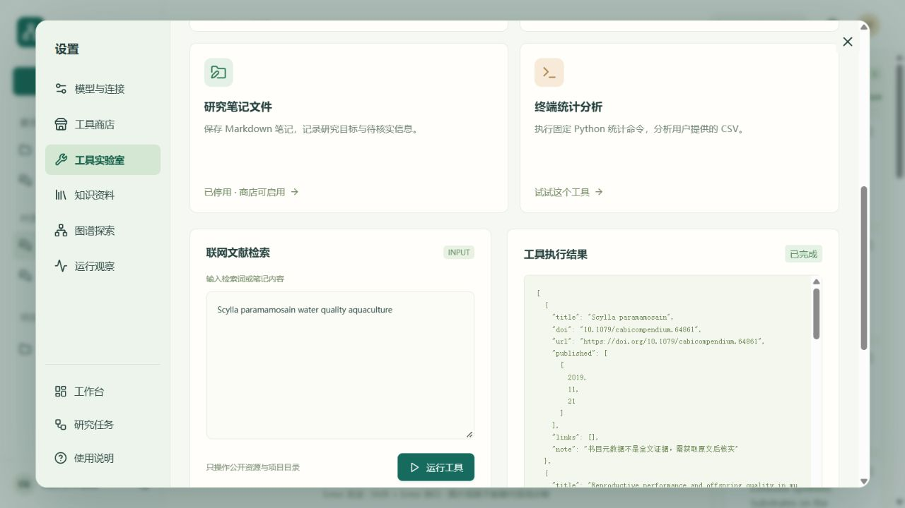
| 工具 | 实际处理 | 主要边界 |
|---|---|---|
| 文献检索 | Crossref 书目、DOI、链接 | 元数据不是全文证据 |
| MCP 图片检索 | Wikimedia 来源与许可 | 参考图不是用户现场数据 |
| 网页抓取 | 公共 HTML 正文提取 | HTTPS 白名单，不跟随重定向 |
| PDF 下载 | 资源保存到项目目录 | 验证 PDF，最大8 MB |
| 文件笔记 | 生成唯一 Markdown 文件 | 不接受任意写入路径 |
| 终端统计 | 固定 Python CSV 命令 | 不运行模型生成的任意命令 |
已实测 Crossref 返回5条文献元数据，公共页面正文抓取6,636字符；FAO 青蟹实用手册 PDF 下载成功，大小1,673,574字节。外部资源仅用于发现资料，不自动进入知识库。
MCP 接入与协议验证
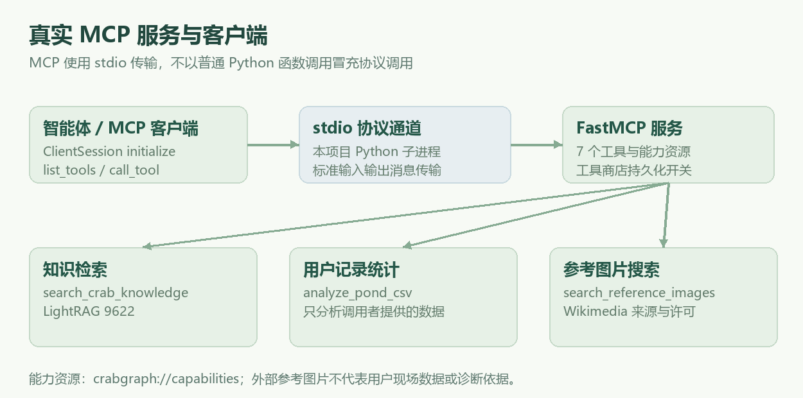
MCP 服务提供知识检索、联网文献、网页正文、用户 CSV 统计、参考图片、PDF下载、笔记保存共7个工具，以及 crabgraph://capabilities 资源。模型调用图片工具时，通过客户端启动本项目 Python stdio 服务，执行真实协议初始化与工具调用。
验证程序调用 initialize、list_tools、list_resources 和 call_tool，列出7个工具；CSV统计成功，联网文献检索经MCP返回5条Crossref结果。图片工具已有实际协议调用记录。停用选项会阻止MCP调用，能力资源返回当前启用列表。
| 配置项 | 本机值 |
|---|---|
| command | E:\Projects\deepseek-lightrag-agent\.venv\Scripts\python.exe |
| args | -m crabgraph.mcp_server |
| 传输 | stdio |
| 使用方式 | 将连接设置页面提供的 JSON 加入支持 MCP 的客户端 |
MCP 是协议与工具接口；它不能替代对工具参数、资源范围、输入可信度和业务结论的校验。项目把用户资料、网页与图片文字都视为不可信数据，而不是系统指令。
开源工具商店与会话项目
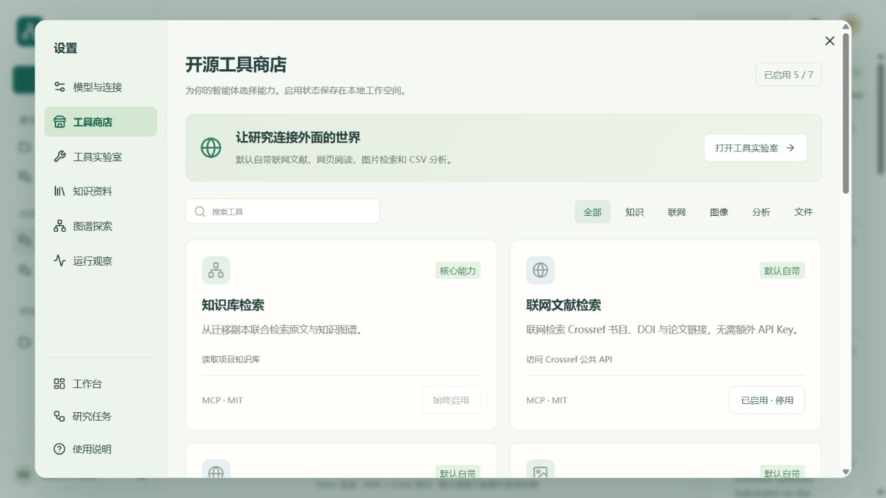
工具商店包含7个本项目MIT适配器，知识检索为始终启用的核心能力。联网文献、公开网页、图片检索、CSV分析默认启用，PDF下载和笔记保存可按需启用。支持分类、搜索和持久化开关；应用没有把尚未安装的第三方MCP服务器标成可用工具。API资料与第三方图片遵循各自许可。
启停状态存入工作空间SQLite；提交问答时保存工具快照并筛选模型工具列表，工具实验室在提交时检查开关，MCP在调用时检查最新开关。停用联网文献后的工具请求返回403，刷新后状态保留。侧栏支持项目新建、项目内对话、已有对话移动到项目，以及项目与对话置顶。
模型模板与自定义配置
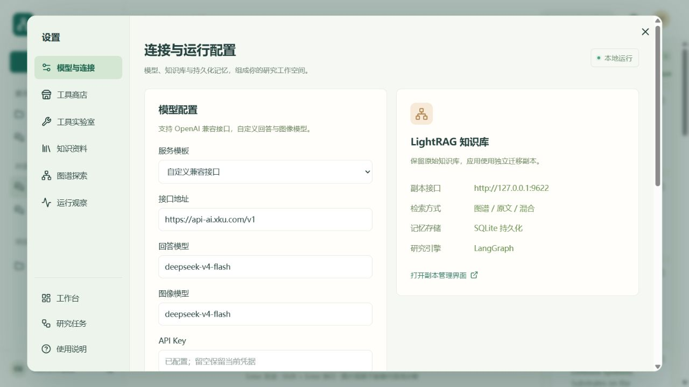
点击头像打开设置弹窗，选择模型与连接。关闭按钮、Esc或遮罩均可关闭；弹窗关闭后保留对话、证据和未发送草稿。预选DeepSeek、通义千问/百炼、智谱GLM，或填写任意OpenAI兼容接口。回答模型需要支持工具调用，图像模型需要支持图片输入；模板只是可编辑起点，模型可用性依具体服务账号而定。此次没有使用其他供应商密钥发起付费模型验证。
配置API不返回密钥。留空可保留当前接口凭据，切换地址必须输入新服务密钥，避免把已有密钥转发给其他接口。保存原子更新项目.env并立即应用于后续任务；已有执行任务时拒绝修改。配置用于应用回答、研究规划与图片观察，LightRAG内部抽取及Jina嵌入沿用副本配置；原始知识库不变。
技术选型与覆盖口径
参考飞书项目公开介绍中的16项技术选型，以已选择的 Python / AI 应用开发方向按对应能力核算：覆盖13项，13÷16=81.25%。这里的覆盖是技术能力等价实现，不是相同 Java 依赖、相同商业平台或相同业务场景的使用比例。
每项只有在本机有实际实现与验证证据时才计入。Serverless 尚未云端部署、Cursor 开发环境和 Ollama 本地模型部署均不计入。已提供的 Serverless 入口适配单测单独列明。
| 参考技术 | Python 对应实现 | 计入 |
|---|---|---|
| Java 21 / Spring Boot 3 | Python 3.13 / FastAPI / Uvicorn | 是 |
| Spring AI / LangChain4j | LangChain / LangGraph | 是 |
| RAG 知识库 | LightRAG 图谱与原文检索 | 是 |
| PGvector | PGlite PostgreSQL / pgvector 0.8.1 | 是 |
| Tool Calling | LangChain 业务工具调用 | 是 |
| MCP | Python MCP SDK / stdio 服务与客户端 | 是 |
| ReAct Agent | 模型与工具循环 / LangGraph 规划审批工作流 | 是 |
| Serverless 计算服务 | Mangum 入口适配 | 否 |
PGvector 使用 PGlite 内的实际 PostgreSQL 与 pgvector 0.8.1 扩展，适合本机单进程演示；它不是独立部署的生产 PostgreSQL 集群。Java 后端与框架能力分别由 FastAPI、LangChain 和 LangGraph 替代。
技术覆盖与验证证据
| 参考技术 | Python 对应实现 | 计入 |
|---|---|---|
| 百炼大模型平台 | DeepSeek 兼容接口与模型配置 | 是 |
| Cursor AI 编程 / MCP | 开发工具不纳入运行依赖 | 否 |
| SearchAPI / Pexels 等第三方接口 | Crossref / Wikimedia Commons | 是 |
| Ollama 大模型部署 | 当前默认DeepSeek远程接口 | 否 |
| Kryo 序列化 | LangGraph JsonPlusSerializer / ormsgpack | 是 |
| Jsoup 网页抓取 | httpx / HTMLParser | 是 |
| iText PDF 生成 | ReportLab / 中文字体 / Markdown表格 | 是 |
| Knife4j 接口文档 | FastAPI OpenAPI / Swagger UI / ReDoc | 是 |
四个可复查的证据
模型与 Tool Calling：真实 DeepSeek 图文问答调用 analyze_pond_records。MCP：标准 SDK 客户端列出7个工具，图片与新增联网文献均有 stdio 协议调用记录。PGvector：真实1024维查询嵌入与数据库 cosine 检索，返回6个来源。
序列化：实际 research-checkpoints.sqlite 中 checkpoint 的 type 为 msgpack，审批恢复测试证明状态可以继续使用。这里覆盖序列化能力，没有声称测量过 Kryo 与 ormsgpack 的性能优劣。
完整逐项证据保存于 docs/technology-coverage.json。飞书参考： https://yuyuanweb.feishu.cn/wiki/D4VSwmWJviWiCekA78ocIZM5nz6
系统架构与关键设计
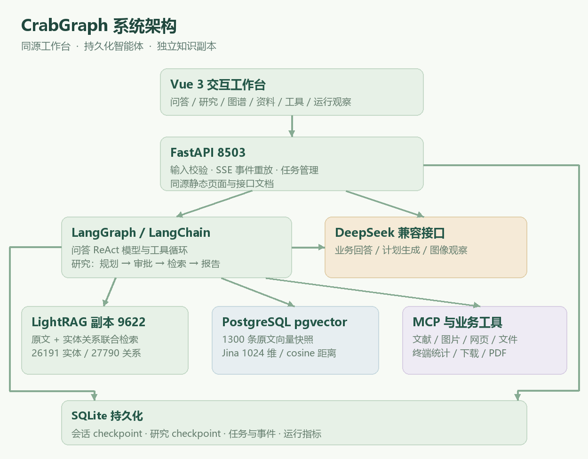
Vue 与 FastAPI 同源部署，默认8503提供页面与接口。LightRAG 副本固定9622，PGvector 固定8510，模型配置留在服务端。迁移加载器只在副本进程中替换快照读取函数，不改变上游持久化格式。
界面消息与任务事件用于产品呈现，LangGraph checkpoint 用于模型和工作流状态，运行指标用于观察耗时与工具调用。分开持久化这些职责，便于查找失败原因与恢复待审批任务。
持久化与运行边界
会话与任务
同一个会话只允许一个进行中的问答，以避免 checkpoint 竞争。任务状态与事件落入 SQLite，SSE 支持事件编号重放；浏览器断开不会撤销后台任务。工作台最多2个执行线程，队列限制4个活动任务。
研究计划在审批节点持久化。服务重启后，待审批计划可以继续确认；正在执行和排队的任务标记失败。取消任务是协作式停止，已经发给供应商的调用需等待返回，不代表撤回已产生的费用。
工具与凭据范围
知识库写入只连接项目副本。网页工具仅接受白名单 HTTPS 地址，拒绝私有地址、任意主机、非标准端口和重定向。文件工具只写入项目资源目录，终端工具只执行固定 CSV 统计程序，不接受任意命令。
前端 Markdown 经 DOMPurify 清理。配置接口不返回密钥，API 写入请求检查本地 Origin，服务只绑定 loopback。当前应用是本机工作台，尚未实现公网多用户认证或权限体系。
进一步发展方向
生产扩展可以加入共享 PostgreSQL、独立任务队列、对象存储、细粒度权限、PGvector 增量同步与业务标注评测。Serverless 入口已有 HTTP 事件适配单测；完整云部署仍需替换本地数据库和后台线程，当前不计入覆盖。
GitHub 调研与实现来源
前期调研从 LightRAG、LangGraph、RAG、多模态与智能体相关项目中筛选热度和适用性；GitHub 元数据及许可证状态保存在 research/github_projects.json。星标快照记录时间为2026年10月10日，不是长期固定排名。
| 项目 | 星标快照 | 许可证状态 |
|---|---|---|
| langchain-ai/langchain | 147,528 | MIT |
| fastapi/fastapi | 102,958 | MIT |
| langchain-ai/langgraph | 42,988 | MIT |
| HKUDS/LightRAG | 40,045 | MIT |
| HKUDS/RAG-Anything | 23,509 | MIT |
| langchain-ai/retrieval-agent-template | 175 | MIT |
项目自行实现业务工作台与编排代码，并复制本机已有 LightRAG 上游源码到 vendor 运行。retrieval-agent-template 用于研究检索工作流组织方式；课程学习仓库用于了解视频模块，不宣称取得商业课程完整源码。
Dify、Open WebUI、RAGFlow 等调研项目用于比较产品与技术方向，不构成本项目所有代码的直接来源。许可证未知、NOASSERTION 或未取得代码许可的仓库，不按开源许可直接复用。
来源与可复查链接
langchain-ai/langchain https://github.com/langchain-ai/langchain
fastapi/fastapi https://github.com/fastapi/fastapi
langchain-ai/langgraph https://github.com/langchain-ai/langgraph
HKUDS/LightRAG https://github.com/HKUDS/LightRAG
HKUDS/RAG-Anything https://github.com/HKUDS/RAG-Anything
langchain-ai/retrieval-agent-template https://github.com/langchain-ai/retrieval-agent-template
安装启动与日常使用
项目目录：E:\Projects\deepseek-lightrag-agent。已配置本机直接在 PowerShell 执行 .\start.ps1；首次准备依赖执行 .\setup.ps1，然后运行启动脚本。
| 入口 | 地址 / 作用 |
|---|---|
| 工作台 | http://127.0.0.1:8503 |
| 带图说明文档 | http://127.0.0.1:8503/guide/project-guide.html |
| API 文档 | http://127.0.0.1:8503/docs 与 /redoc |
| 知识副本管理 | http://127.0.0.1:9622/webui/ |
| PGvector 状态 | http://127.0.0.1:8510/health |
| 停止 | .\stop.ps1，仅停止本项目归属进程 |
五步体验
1. 从知识问答开始，输入一个青蟹业务问题，查看带来源的回答。 2. 上传图片或 CSV，比较观察结果、统计结果和文献结论。 3. 在研究任务里输入目标，确认计划后等待报告，下载 PDF。 4. 在图谱中选择实体，查看关系与描述，再发起实体问答。 5. 打开工具实验室和运行观察，检查实际结果、耗时和 Token。
配置与备份
头像设置可保存回答模型和视觉模型，无需重启工作台；根目录 .env 持久化配置，runtime/lightrag/.env 保留知识库副本配置。不把兼容网关模型名直接当成官方服务名称。服务停止后备份 runtime 与私有配置，保留原始知识库的独立备份。
更多维护说明见 docs/operations.md。源码、依赖与数据路径都使用项目相对结构；私有知识数据、凭据和依赖缓存不提交 Git。
本机验收与真实运行记录
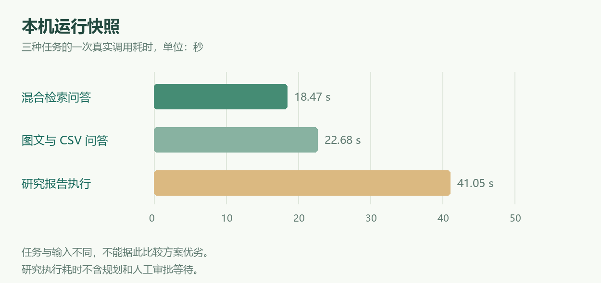
| 验证项 | 实际结果 |
|---|---|
| 自动化测试 | 21项通过；新增工具启停、项目置顶、工具过滤、图谱上限与模型密钥检查 |
| 混合问答 | 8个来源，总耗时18.47s；首字5.70s |
| 研究报告 | 15个来源；审批恢复成功；执行阶段41.05s |
| 图文与 CSV | 6个来源；22.68s；实际统计工具调用 |
| PGvector | 1300条 / 1024维 / 扩展0.8.1，真实检索已验证 |
| 原始存储 | 12个文件SHA256与迁移快照一致 |
这些结果用于证明流程可运行，没有形成规模化准确率、并发压测、生产 SLA 或农业诊断指标。插画和合成 CSV 只用于协议与工具验证，历史失败资料仍保留真实状态。
复查文件：docs/live-validation.json、multimodal-validation.json、download-validation.json。运行实时验收脚本会调用模型与嵌入服务，产生供应商费用。
界面观察与移动端
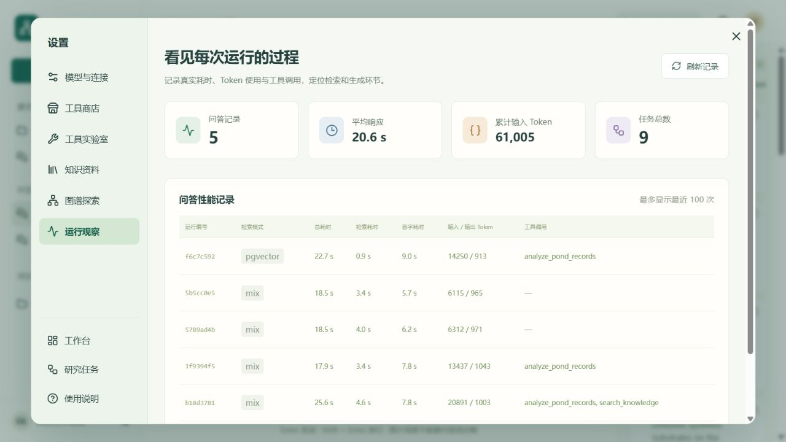
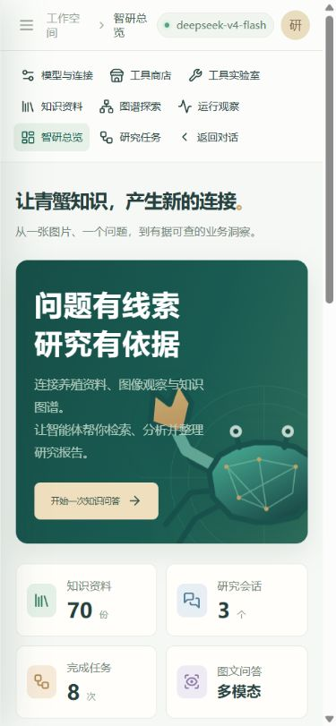
桌面仅有一个会话与项目侧栏；工具与配置移入头像设置弹窗。390像素窄屏弹窗没有横向溢出，分类自动折行，右侧内容独立滚动；键盘焦点限制在弹窗内，关闭后回到头像按钮。移动端折叠侧栏，问答证据面板按需展开。研究与对话各自保留执行轨迹，切换页面时恢复对应回答的证据，避免历史研究过程混入问答面板。
简历写法与面试演示
可以使用的项目描述
构建青蟹多模态研究工作台，使用 FastAPI、LangGraph、Vue 3 与 DeepSeek 实现持久化问答、图文观察、用户记录分析、可审批的研究任务和报告导出；接入 LightRAG 的约2.6万实体与2.8万关系图谱，并复制1,300条原文向量到独立 PostgreSQL pgvector 索引，提供可追溯证据和实际 MCP 工具调用。
六分钟演示顺序
| 时间 | 演示动作 | 解释重点 |
|---|---|---|
| 0—1 分钟 | 总览与业务范围 | 资料、图片、CSV不是同一种证据 |
| 1—2 分钟 | 问答与来源面板 | 原文、引用、本轮检索与多轮记忆 |
| 2—3 分钟 | 图文和CSV示例 | 真实模型工具调用，注明示例性质 |
| 3—4 分钟 | 研究计划确认 | interrupt、checkpoint、resume |
| 4—5 分钟 | 图谱与MCP工具 | 有限子图、协议与真实返回结果 |
| 5—6 分钟 | 报告与运行观察 | 解释耗时、局限和未部署项 |
需要准备的追问
为什么 LightRAG 与 PGvector 同时存在？LightRAG 提供图谱和原文联合检索，PGvector 快照验证另一条关系型向量检索路径；当前不自动同步。为什么使用两个 SQLite 层？工作台数据和智能体状态职责不同。为什么来源编号检查不能代表准确性？编号只证明来源存在，没有判断语义支持关系。
如何处理长任务和失败？事件持久化、协作式取消、审批状态恢复和明确失败记录。如何保证原始知识库不被改变？固定副本地址、启动与停止归属检查、复制后哈希核验。下一步会做什么？补业务标注评测、增量同步和完整云端任务基础设施。
交付文件与资料归属
| 文件 / 目录 | 用途 |
|---|---|
| README.md | 项目入口、功能与验收概览 |
| docs/CrabGraph项目说明.pdf | 可分享的带图项目说明书 |
| docs/project-guide.html | 本地可浏览的带图说明文档 |
| docs/images | 真实页面截图、架构、流程与验证图 |
| docs/technology-coverage.json | 16项参考技术逐项对照 |
| docs/operations.md | 启动、维护、备份与运行边界 |
| src/crabgraph / frontend | 工作台后端与Vue源码 |
| tests / scripts | 自动化验证、迁移与构建脚本 |
所有截图来自本机实际运行页面，架构与流程图按当前代码自行绘制。青蟹示意插画由项目绘制，作为协议测试样例；合成养殖 CSV 已注明用途。外部图片搜索结果保留原网页与许可，不混作用户现场图片。
工作台原始代码采用 MIT 许可；LightRAG、依赖与参考项目保留各自许可证。私有知识资料、凭据和个人环境不在工作台代码许可证中授权。GitHub 调研文件保存原始许可证状态，不把未知许可证解释为可任意复用。
参考公开项目说明、GitHub 上游与官方技术文档用于方案对照，不声明取得参考课程的全部源码或云服务。Serverless 完整部署、Cursor 环境与 Ollama 本地模型运行不计入当前81.25%的等价技术能力覆盖。